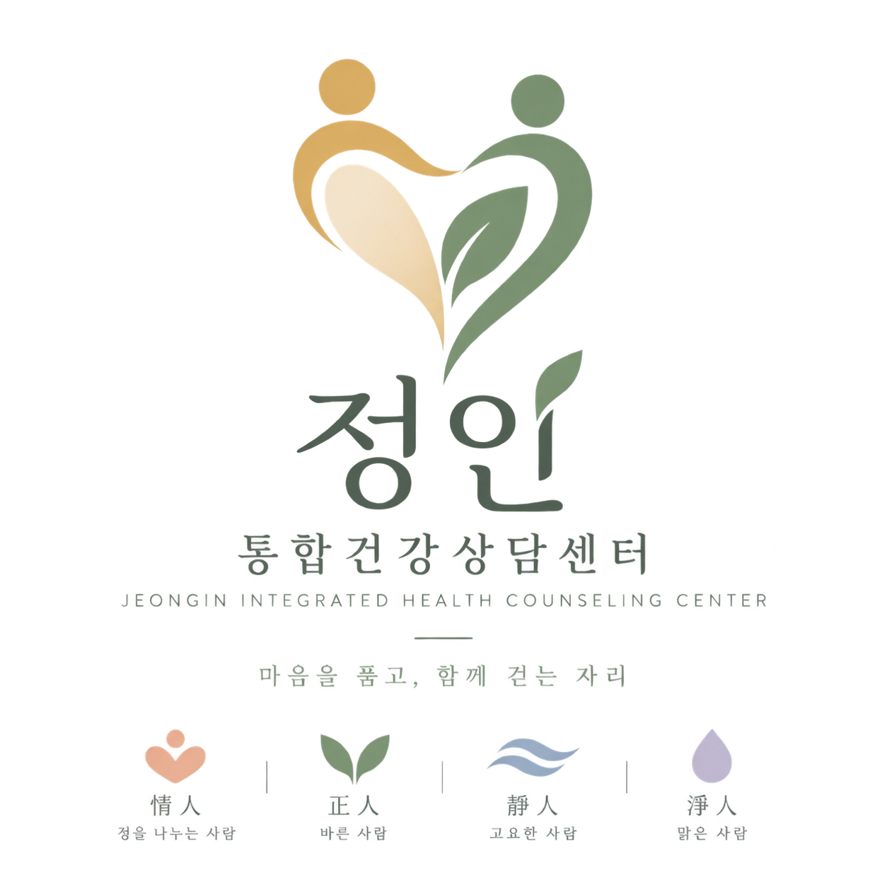

먼저 이야기하고 싶다면
1:1 상담
지금 가장 힘든 일부터 시작해 감정, 관계, 생활, 지나온 경험을 함께 살펴봅니다.
혼자 충분히 이야기하고 싶은 분을 위한 만남입니다. 마음의 어려움만 떼어놓지 않고, 몸의 변화와 일상·관계 속 경험을 함께 이야기합니다.
몸이 지치고 마음이 흔들리고, 사람과의 관계까지 어려워질 때 무엇부터 이야기해야 할지 알기 어려울 수 있습니다.

무엇이 문제인지 정확히 정리해서 오지 않아도 됩니다.
큰 문제가 있는 것 같지는 않은데 마음과 에너지가 예전 같지 않을 때.
“뭐가 힘든지는 모르겠는데 힘들다.” 그 정도의 이야기부터 시작해도 됩니다.
사람만 달라질 뿐 비슷한 갈등과 상처가 계속될 때.
질병, 회복, 돌봄, 상실, 노화 등 몸의 변화가 삶 전체에 영향을 줄 때.
큰 문제가 있어서가 아니라 나의 생각·감정·관계 방식을 이해하고 싶을 때.
누군가에게 이야기를 꺼내보고 싶지만 어디서 시작해야 할지 모르겠을 때.
지금 가장 힘든 일부터 시작해 감정, 관계, 생활, 지나온 경험을 함께 살펴봅니다.
혼자 충분히 이야기하고 싶은 분을 위한 만남입니다. 마음의 어려움만 떼어놓지 않고, 몸의 변화와 일상·관계 속 경험을 함께 이야기합니다.
나를 유형 안에 가두기보다 반복되는 생각·감정·관계의 방식을 이해하는 데 활용합니다.
비슷한 상황에서 반복되는 나의 반응이 궁금할 때, 나를 바라보는 하나의 관점으로 살펴봅니다. 유형을 정하는 것보다 자신의 경험과 관계를 이해하는 데 초점을 둡니다.
말로 설명하기 어려운 감정과 관계를 장면과 역할을 통해 경험하고 바라봅니다.
이야기만으로 표현하기 어려웠던 마음을 장면과 역할이라는 방식으로 만나봅니다. 구체적인 참여 대상과 개인·집단 진행 방식은 확인 후 안내하겠습니다.
비슷한 고민을 가진 사람들과 배우고, 이야기하고, 경험하는 프로그램입니다.
다른 사람의 경험을 듣고 나의 이야기를 나누는 만남을 준비합니다. 확정된 프로그램과 모집 일정은 운영 정보가 정해지면 안내하겠습니다.
이용 안내 준비 중대상·연령, 시간, 비용과 운영 방식은 확인 후 안내합니다.
당신을 이해하는 방법이 하나뿐이라고 생각하지 않습니다.
질병, 통증, 수면, 회복, 돌봄처럼 몸에서 시작된 변화가 마음에 어떤 영향을 주는지도 함께 살펴봅니다.
정신건강뿐 아니라 내과·외과·호스피스를 포함한 의료현장에서 사람들을 만나온 경험이 바탕이 됩니다.
정신간호, 상담, 심리극, 에니어그램 등 여러 관점을 필요에 따라 활용합니다.
중요한 것은 도구의 이름보다, 당신을 이해하는 방법이 하나뿐이지 않다는 것입니다.
가족, 직장, 돌봄, 관계, 지역사회와 연결된 삶의 맥락까지 함께 살펴봅니다.
정신건강복지센터의 현장 경험과 사회복지의 관점을 바탕으로, 한 사람을 둘러싼 생활과 관계에도 귀 기울입니다.
어느 한 부분만 떼어놓는 대신,
한 사람 안에서 몸 · 마음 · 관계가 어떻게 연결되어 있는지를 함께 보는 것.
그것이 정인이 생각하는 통합건강입니다.
몸의 변화, 관계, 생활, 지나온 경험은 서로 연결되어 있으니까요. 정인은 당신의 이야기를 하나의 문제로 단정하기보다 지금의 삶 전체에서 함께 이해해갑니다.

몸의 상태와 변화
질병과 회복
수면 · 피로 · 생활
감정
불안과 스트레스
자기이해
가족
사람들과의 관계
삶의 환경
서비스 이름보다, 지금 나에게 필요한 시간을 먼저 떠올려 보세요.
혼자 충분히 이야기하고 싶어요.
1:1 상담나 자신을 이해하고 싶어요.
에니어그램말로 설명하기 어려워요.
심리극비슷한 고민을 가진 사람을 만나고 싶어요.
소집단 프로그램삶의 특정 시기를 잘 지나가고 싶어요.
생애주기 교육상담까지는 아니지만 마음을 돌보고 싶어요.
명상 · 커뮤니티선택을 위한 안내상황별로 살펴볼 수 있는 방법입니다. 실제 참여 대상과 운영 일정은 확인 후 안내하겠습니다.

조명희정인통합건강상담센터 대표
몸이 아픈 사람, 마음이 아픈 사람, 그리고 삶의 마지막을 준비하는 사람까지 만나왔습니다.
청주의료원 임상현장과 정신건강복지센터에서 사람의 어려움이 어느 한 부분만의 문제가 아니라는 것을 경험했습니다.
이야기하고, 쉬고, 배우고, 함께할 수 있도록.

심리극, 교육, 집단 프로그램을 통해 서로의 이야기를 나누고 새로운 관점을 만나는 공간입니다.

외부의 시선을 신경 쓰지 않고 편하게 이야기를 나누는 공간입니다.

잠시 쉬거나 명상하며 몸과 마음에 귀 기울이는 공간입니다. 안마의자 등 비치 장비와 이용 방식은 확인 후 안내하겠습니다.

원장실을 포함해 정인의 공간을 함께 둘러보세요.

라운지는 상담을 받는 시간 외에도 쉬고 머무는 공간으로 생각했습니다. 상담하고, 쉬고, 배우고, 사람을 만나는 시간이 한곳에서 이어지기를 바랍니다.
라운지 사진과 실제 이용 범위·운영 방식은 확인 후 안내하겠습니다.
개인상담이 필요한 시간도 있지만, 사람들과 만나고 배우며 회복하는 시간이 필요할 수도 있습니다.
운영 계획프로그램과 모집 일정은 확정 후 안내합니다.
비슷한 경험을 나누는 모임
몸과 마음을 천천히 바라보는 시간
관계를 만들고 머무는 활동
삶의 시기에 필요한 마음교육
경험을 나누며 서로 지지하는 관계
정인은 상담 밖에서도 마음을 돌볼 수 있는 관계를 만들어가고자 합니다. 편하게 들러 마음을 나누는 ‘마을 마음거실’처럼, 일상 가까이에서 함께할 만남을 준비합니다.
실제 개소 시 운영 프로그램과 모집 일정·인원·참가비는 확정 후 안내하겠습니다.
‘정을 나누는 사람’이라는 의미에서 시작했습니다.
이름에 담긴 마음이 당신과 이야기를 나누는 시간에도 이어지기를 바랍니다.

정을 나누는 사람
바른 사람
고요한 사람
맑은 사람
지금 필요한 상담이나 프로그램을 살펴봅니다.
궁금한 점을 나누고 상담 일정을 정합니다.
지금의 어려움과 필요한 도움을 함께 살펴봅니다.
초회 상담의 세부 절차와 상담 전에 작성할 사항은 실제 운영 방식 확인 후 안내하겠습니다.
무엇이 문제인지 정확히 정리해서 오지 않아도 됩니다. “뭐가 힘든지는 모르겠는데 힘들다”는 이야기나, 나를 더 알고 싶은 마음부터 시작해도 됩니다.
혼자 이야기하고 싶은지, 나를 이해하고 싶은지, 다른 사람과 경험을 나누고 싶은지부터 떠올려 보세요.
상담 가능한 대상·연령, 방식별 비용, 소요 시간과 운영 요일은 확인 후 안내하겠습니다.
예약 접수 방법과 변경·취소 기준은 안내 준비 중입니다. 연락처와 함께 확인 후 안내하겠습니다.
상담 소요 시간과 운영 요일을 확인하고 있습니다.
상담과 프로그램별 비용을 확인하고 있습니다.
아니스퀘어 A동 210호
방문 안내는 확인 후 전해드리겠습니다.
건물 출입 방법과 주차 가능 여부·이용 기준은 확인 후 안내하겠습니다.
상담 가능한 연령과 고민 영역, 다른 기관의 도움이 필요한 경우를 확인 후 안내하겠습니다.
전화 연결 확인용 임시 번호입니다. 실제 상담 연락처는 추후 안내합니다.
현재는 임시 번호로 전화 앱이 열립니다.